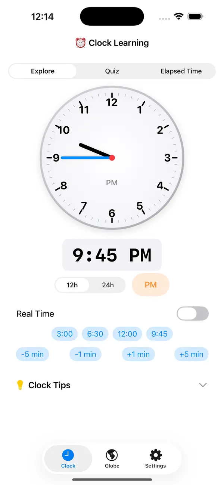
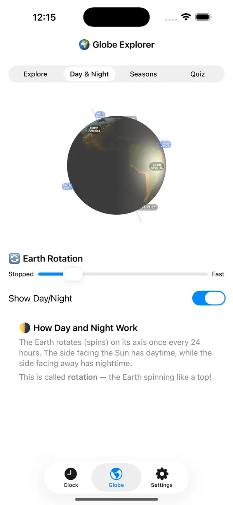

Apprenez l'heure. Explorez le monde. Tout dans une expérience interactive.
Tick Tock Earth réunit deux modules d'apprentissage pratiques : une horloge analogique/numérique entièrement interactive et un superbe globe 3D propulsé par les images de la NASA — avec simulation jour/nuit, orbites saisonnières et quiz.
Aperçu de l'app
iPhone





iPad


Deux modules, une seule app
Chaque module est autonome et regorge d'outils interactifs, d'aides visuelles et de modes quiz.
🕐 Horloge analogique interactive
Faites glisser les aiguilles des heures et des minutes pour régler l'heure de votre choix. L'affichage numérique synchronisé se met à jour instantanément. Comprenez la notion AM/PM et la relation entre les aiguilles et les chiffres du cadran.
⏱ Calculateur de durée écoulée
Définissez une heure de début et une heure de fin, puis voyez instantanément la durée écoulée. Un outil pratique pour comprendre les intervalles et les différences de temps.
🌍 Globe 3D avec textures NASA
Faites pivoter une Terre 3D haute résolution aux couleurs vives. Touchez un continent ou un océan pour vous y envoler et lire des informations rapides. Activez la grille latitude/longitude et les superpositions libellées.
🌗 Simulation du jour et de la nuit
Un globe pédagogique fixé à l'inclinaison axiale de la Terre (23,5°) avec un pôle d'axe visible. Activez la lumière du soleil pour voir comment la rotation crée le jour et la nuit — comme une maquette de classe.
🌞 Saisons et schéma orbital
Une vue orbitale animée montre la position de la Terre autour du Soleil pour chaque mois. Les saisons des hémisphères nord et sud sont affichées côte à côte.
📝 Quiz intégrés
Quiz de l'horloge : lire ou régler une horloge. Quiz de géographie : continents, océans, rotation, révolution, monuments et faits amusants. Suivi des scores inclus.
Comment ça marche
Deux modules accessibles depuis l'écran d'accueil — touchez et explorez.
Explorateur de l'horloge
Onglet Apprendre : Faites glisser les aiguilles de façon interactive. Des guides pas à pas expliquent les heures, les minutes et le format AM/PM.
Onglet Durée écoulée : Calculez le temps entre deux réglages de l'horloge.
Onglet Quiz : « Lire l'horloge » ou « Régler l'horloge » — choisissez votre réponse et touchez Vérifier la réponse.
Explorateur du globe
Onglet Explorer : Faites tourner le globe 3D librement. Touchez les cartes continent/océan pour vous envoler vers chaque lieu et lire des informations.
Onglet Jour et nuit : Réglez la vitesse de rotation et activez la lumière du soleil. Pincez pour zoomer, touchez deux fois pour réinitialiser.
Onglet Saisons : Choisissez n'importe quel mois pour voir la position orbitale de la Terre et les saisons de chaque hémisphère.
Hors ligne et privé
Tout fonctionne sur l'appareil. Sans compte, sans pub, sans collecte de données. Fonctionne sans connexion Internet — parfait pour la classe, les voyages ou partout ailleurs.
Questions fréquentes
L'app nécessite-t-elle une connexion Internet ?
Non. Toutes les fonctionnalités — horloge, globe, quiz — fonctionnent entièrement hors ligne.
L'app collecte-t-elle des données ?
Non. Aucune collecte de données. Consultez notre Politique de confidentialité.
Fonctionne-t-elle sur iPad ?
Oui. Tick Tock Earth est une app universelle optimisée pour iPhone et iPad.
Comment réinitialiser le score du quiz ?
Touchez le bouton « Réinitialiser » à côté du score, en haut de chaque onglet de quiz.
Comment contacter l'assistance ?
Écrivez à wangning.engineer@outlook.com. Le délai de réponse habituel est de 24 à 48 heures.
Télécharger l'app
Tick Tock Earth est disponible sur l'App Store pour iPhone et iPad.